So… a few months ago we at ReallyGoodEmails.com asked tens of thousands of email geeks to tell us about themselves at work. Most people were like, “Nope. Got better things to do with my life.” But there were about a thousand people who decided to take one for the team and give us a solid 7 minutes so that we could put this thing together.
To all those people who helped out (1,067 to be exact), this research goes out to you.
xoxo,
The RGE Team
About the people in email…
Attitude, outlook, and background
We asked how people ended up involved in the wild world of email. The vast majority (57%) were brought into the fold because they started a new position that required them to work on it. Welcome to the jungle. Only 1.5% reported actually studying how to email before jumping into the workforce, whereas almost 1 in 5 (19.5%) told us that they had some coding, design, copywriting, and/or analytical skills which they volunteered — of their own free will — to do more in email for their organization. Of the remainder, 15.2% reported that they were forced into email development by “the man” (aka their boss) and 6.2% fell into the “other” category, citing activities such as necessity for running the business (i.e. being the founder), or trying to understand customer behavior (i.e. UX designers and analysts).
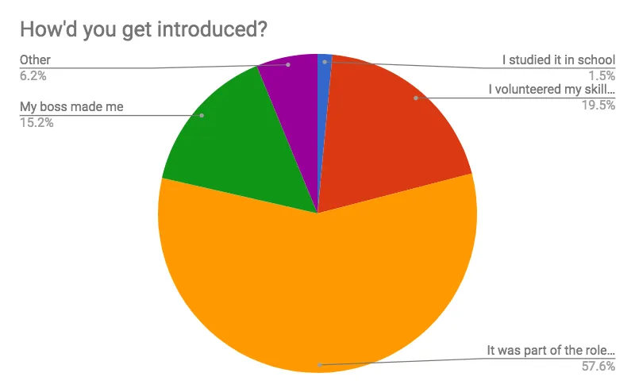
Of the emailers who responded, the studious types and volunteers aren’t really feeling it long-term compared to their peers. Many of them don’t see themselves sticking with email beyond the next few years. Sadness. But you do you, boo. The good news is that 2 out of 3 (67%) still feel the email love. They have a positive, view of their roles in email development. Hurray!
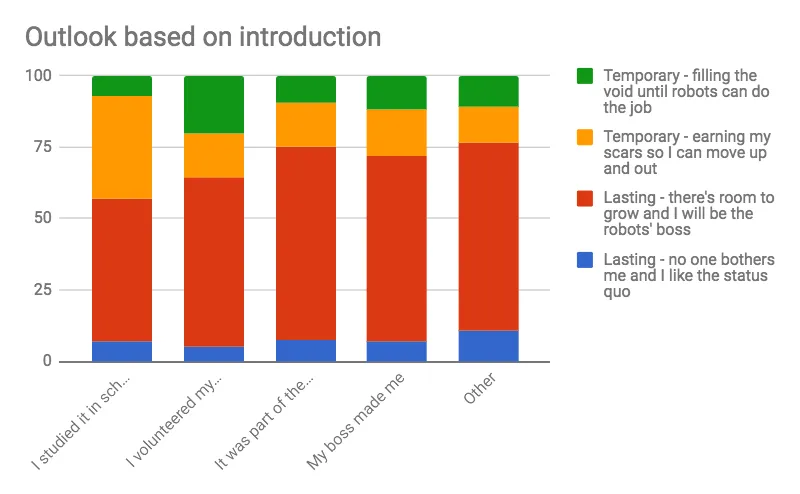
It’s all a matter of perspective and experience, apparently: long-term vs. short-term outlook was influenced by years of experience. Like adorable, exuberant puppies, the newbies (0–1 year) see a lasting role in email. Things are a bit gloomy in years 2–4, but the turning point seems to be year 5. The sunshine and roses return at that point! Or, maybe that’s the point at which people say peace out. But after that, the longer they’re in email, the brighter the outlook.
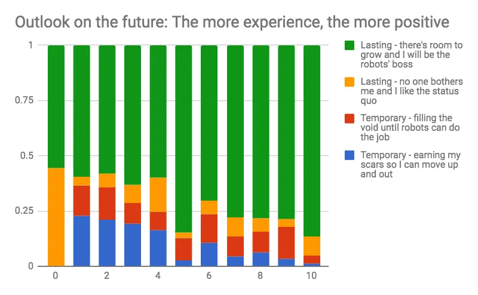
Experience
We shouldn’t play fast and loose with our stats, though… full disclosure: a majority of respondents (55%) have 3 years or less of dedicated email experience. This makes those of us with almost a decade or more of emailing feel like dinosaurs… y’all remember aol? Hotmail, anyone?! Oh, man… those were the days. But you youngsters out there give us hope for the future.
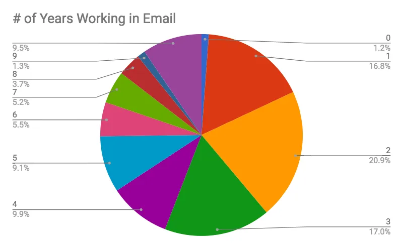
And it seems like that future will be guided by those of you who have full-time gigs doing email. Based on years worked, you are more likely to have a dedicated role in email. However, around 7 years in, that dedication switches back to part-time for some reason. (Without more information, our assumption is that with the more years of experience, individuals may be placed in management roles which take away this full-time focus.) On average of all years worked, only 38% have a full-time email role.
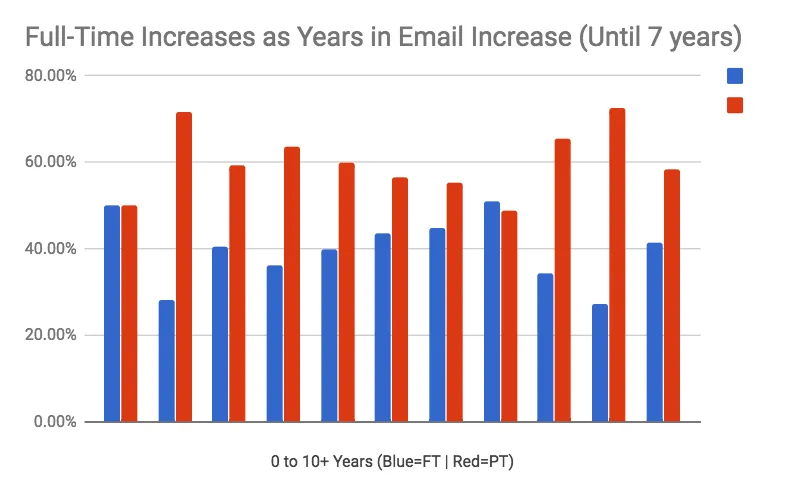
When it comes to actual role titles, seems like a lot of our readers see themselves as email dabblers rather than dedicated experts in any one thing. Almost 60% self-identify as filling a mixed bag kind of role — taking on a number of tasks such as designing, coding, managing, and analyzing.
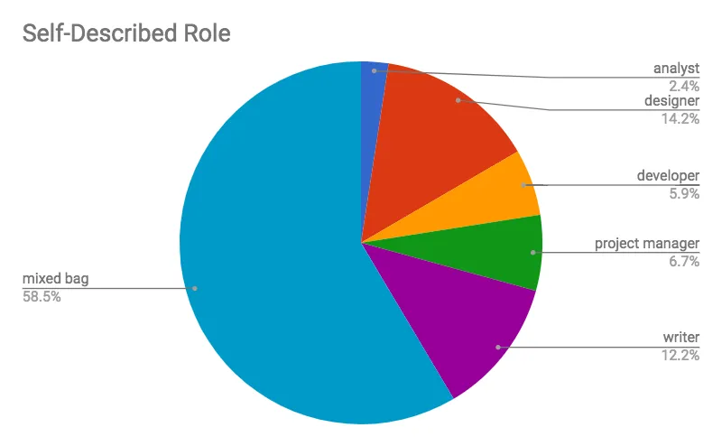
And that’s probably because most of y’all are either flying solo or working as a tiny tag-team crew. 80% of email teams are 3 people or less! Bless you. You are the warriors.
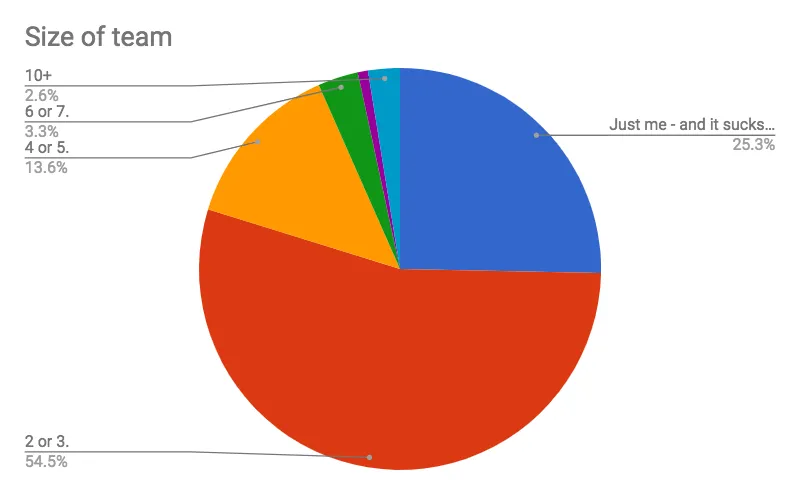
Working conditions
Getting stuff done with your team is all the craze these days. You know what else is a craze? Working remote (#remotelife). So… we were surprised that most of y’all are tied to offices. The analysts are given more freedom than any other role, and designers (the “free spirits” of the tech-iverse) are more chained to an office than any other self-described role.
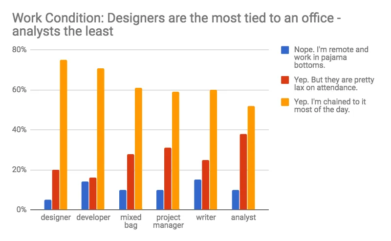
If you’re to break free from a desk, you probably need to take a look at your list-size — as this was the biggest factor on remote work ( even more than years worked or size of team). As you can see from the results, the higher the list size, the less strict they are for sticking butts in seats in the office. But, as corporate life goes, they still want you in the office compared to smaller list size companies who don’t mind remote workers.
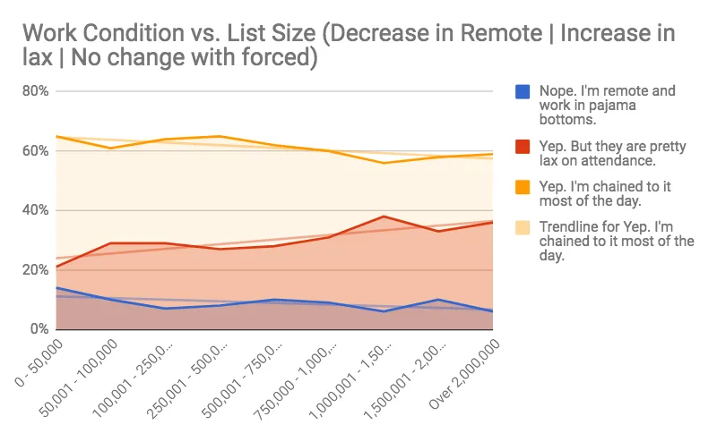
About the emails themselves…
Size matters (As in matters related to list size! Geez.)
Looking at work conditions by list size got us curious about how list size impacted other factors. We found some really good correlations that we thought we’d share. For one thing, if you’re all on your lonesome, getting your list up past the 50k mark increases your chances of getting a buddy or two on board to help out.
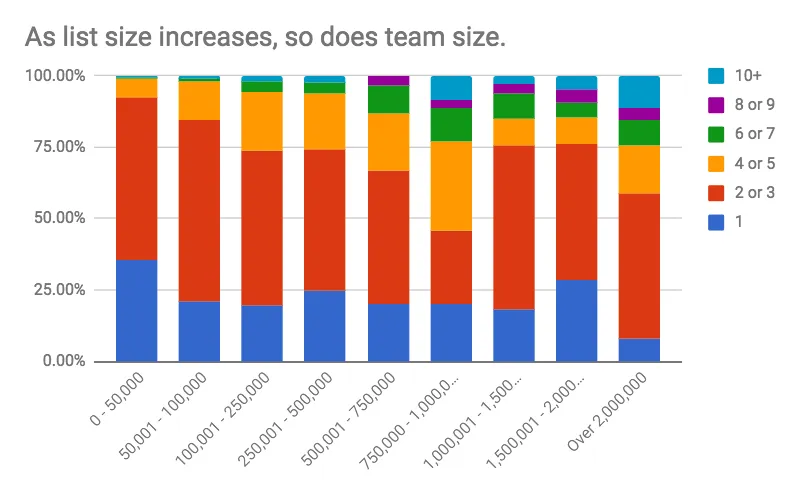
And, perhaps un-shockingly, the larger the list, the more time spent planning the emails. Fewer than 500k? Emails get planned in about 3 days or less. 500,001 and more and you’re up to 5+ days of planning. We don’t really know what to say about the 30–60 days of planning. Does that deserve a slow clap for being so on top of things?
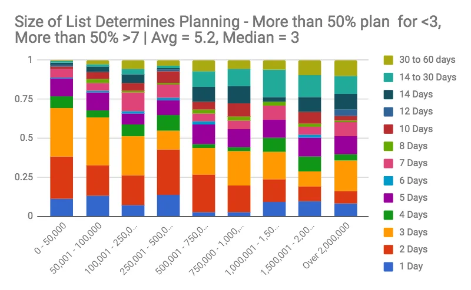
As the saying goes: “mo’ people, mo’ problems.” Okay, it doesn’t go like that. But you can see below that the more people you have on your list, the more emails you are working at a given time, with the median being 3 emails.
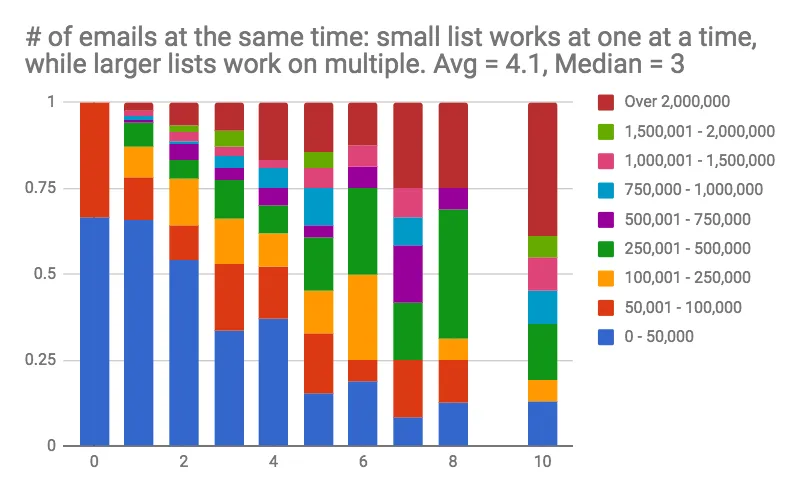
The bigger the list, the more it becomes about the Benjamins. We asked what was the most important metric for each team, and clicks and opens get less important while lifetime value and money generated per email become more more significant.
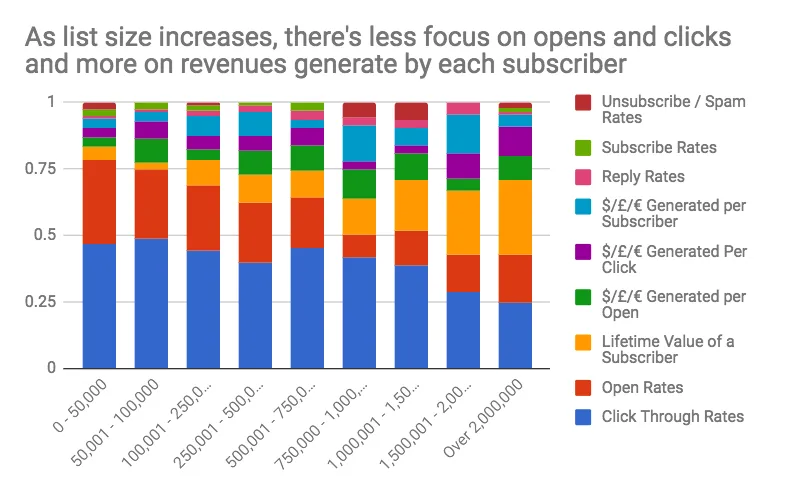
Life also seems to be much simpler for people with smaller lists. When you grow your list, it indicates that you start trying to please multiple masters, going from almost half of the population in the survey saying they just send one call-to-action to only a quarter with large lists.
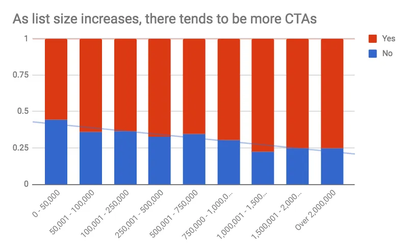
Doing email is never painless, right? Right. So we wondered about the biggest pain point, and apparently it’s people. People and their opinions. Those are the worst. Especially when the list gets big. Ideas seem to run rampant on the streets the bigger the list size, compared to those with smaller lists who have a harder time figuring out what to say. And dynamic content, that tends to be a jerk all the time.
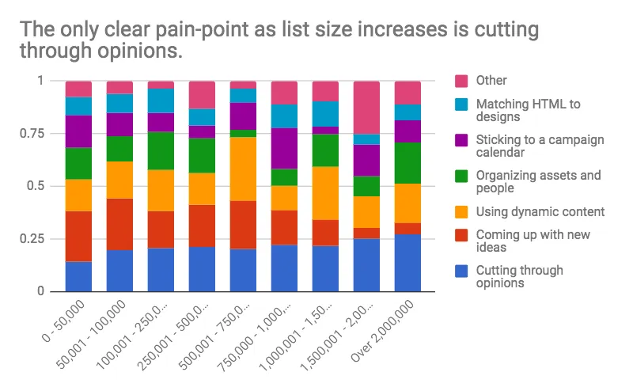
That’s the last of the graphics. We are still sitting on a ton of information, but we’re going to save some more results for our UNSPAM conference — which you should come to. (Be on the lookout for details soon! It’s gonna be rad. We promise.)
Overall, and un-shockingly, it seems like email is something that gets pawned off on too few people as a job add-on rather than a dedicated role. The good news is that the responsibility doesn’t seem to crush your souls — if you stick with it, you’ll probably maintain a sunny disposition and hope for the future. (Especially with a weekly dose of camaraderie and silliness from our kick-ass newsletter!) Growing your list will probably grow your team, but it’ll also come with more planning and more people and more opinions and more CTAs and more… stuff. Good? Bad? Who knows. But you don’t gotta go it alone. We’re here for you, friends.